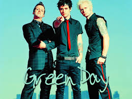
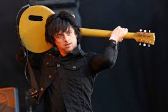

Green Day es una banda estadounidense de pop punk y punk rock integrada inicialmente por tres miembros: Billie Joe Armstrong (guitarra y voz), Mike Dirnt (bajo y coros) y Tré Cool (batería y coro), esta formación estuvo vigente hasta el 2012, donde se integró oficialmente el que fuera su guitarrista de apoyo no oficial por más de trece años: Jason White. El grupo originario de Berkeley, California, se gestó prematuramente en 1986 bajo el nombre de Sweet Children, con el baterista John Kiffmeyer (mejor conocido como Al Sobrante). En 1989 se cambiaron al nombre actual y poco después del lanzamiento de su primer álbum de estudio (39/Smooth), Tré Cool reemplazó al Sobrante.
Fue uno de los grupos que nacieron en el club 924 Gilman Street, sitio donde frecuentaban bandas de punk rock. Sus primeras publicaciones se realizaron por medio del sello discográfico independiente Lookout!, gracias a las exitosas ventas de sus primeros trabajos discográficos, se obtuvo una importante cantidad de admiradores. Algunos años después, en 1994 el conjunto firmó con Reprise Records, con este sello lanzaron el aclamado Dookie, con este nuevo álbum el conjunto llevó el sonido de finales de la década de 1970 a la nueva generación, además, el álbum se convirtió en un éxito internacional y lleva vendidas más de veinticinco millones de copias en todo el mundo.
El conjunto estadounidense ha vendido alrededor de 80 millones de copias en todo el mundo. y más de 30 millones solo en su país. En 2010 se estrenó una adaptación teatral del álbum American Idiot en Broadway, el musical fue nominado para Tony Awards, incluyendo Mejor Musical y Mejor Diseño Escénico, y ha recibido comentarios positivos en general. A mediados de 2011 la revista Kerrang! los nombró como el segundo grupo más influyente surgido en los últimos treinta años, sólo por detrás de Metallica. Según una encuesta pública, en la publicación quincenal de Rolling Stone, se eligió a Green Day como el mejor conjunto de punk de la historia.